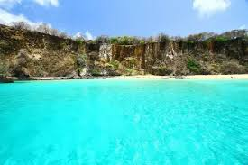
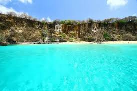
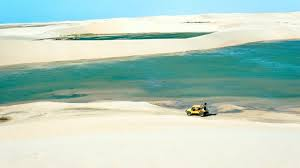
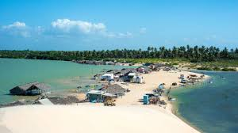
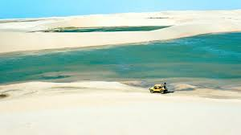
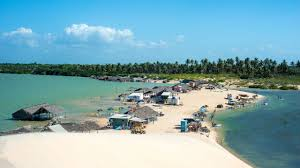
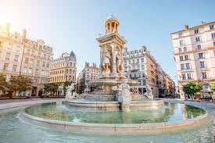
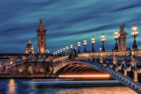
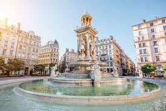
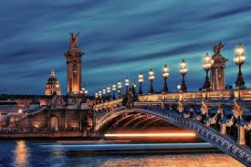

O Rio de Janeiro é uma das cidades mais icônicas do Brasil, famoso por suas praias deslumbrantes como Copacabana e Ipanema, além de sua rica cultura e vida vibrante. Um dos maiores símbolos da cidade e do país é o Cristo Redentor, a imponente estátua que oferece vistas panorâmicas incríveis. Com sua combinação única de belezas naturais, história e entretenimento, o Rio é destino obrigatório para quem busca uma experiência brasileira inesquecível.
 

Fernando de Noronha é um arquipélago paradisíaco conhecido por suas praias de águas cristalinas, vida marinha diversificada e paisagens naturais preservadas. Ideal para quem ama ecoturismo, mergulho e contato direto com a natureza, o local oferece uma experiência única de tranquilidade e beleza exuberante, sendo um dos destinos mais exclusivos e protegidos do Brasil.
Foz do Iguaçu é famosa mundialmente pelas impressionantes Cataratas do Iguaçu, um dos maiores espetáculos naturais do planeta. Além das quedas d’água, a cidade oferece atrações como o Parque das Aves, a Usina de Itaipu e a diversidade cultural proporcionada pela proximidade com a tríplice fronteira entre Brasil, Argentina e Paraguai. Um destino perfeito para quem busca aventura, natureza e experiências multiculturais.
Sua herança cultural está profundamente ligada às tradições africanas, que se manifestam nas religiões como o Candomblé, na culinária típica, na música e na arte. Salvador é também conhecida por suas festas tradicionais, que atraem turistas de todo o mundo. O Carnaval de Salvador, um dos maiores do planeta, destaca-se pelo axé, trios elétricos e blocos afro que animam as ruas por vários dias. Outras festas importantes são a Festa de Iemanjá, em homenagem à rainha do mar, e o Lavagem do Bonfim, evento religioso e cultural que mistura fé, música e dança.
Os Lençóis Maranhenses, localizados no Maranhão, são um espetáculo natural imperdível para quem ama aventura e paisagens incríveis. Imagine um enorme deserto de dunas brancas e suaves, intercalado por lagoas de água cristalina que se formam durante a temporada de chuvas, criando um cenário mágico e único no mundo. Esse parque nacional é perfeito para quem quer fazer caminhadas entre as dunas, nadar em lagoas refrescantes e curtir a natureza quase intocada. A melhor época para visitar é entre os meses de maio e setembro, quando as lagoas estão cheias e as cores ficam ainda mais vibrantes. Além da beleza natural, a região também oferece experiências culturais locais, com comunidades tradicionais que recebem os visitantes com hospitalidade e pratos típicos deliciosos. Se você busca um destino para relaxar, se aventurar e tirar fotos incríveis, os Lençóis Maranhenses são a escolha perfeita!
A cidade é famosa por sua gastronomia, que inclui fondues, chocolates artesanais, cafés coloniais e vinhos da região. Caminhar pelas ruas de Gramado é um convite a saborear cada detalhe — desde a culinária até o artesanato local. Durante o ano, a cidade realiza eventos que atraem turistas de todo o país, como o Natal Luz, com desfiles iluminados e espetáculos natalinos, e o Festival de Cinema de Gramado, um dos mais importantes do Brasil. É um destino ideal para casais, famílias e amantes da boa mesa e da cultura.
Bonito, no coração do Mato Grosso do Sul, é um dos principais destinos de ecoturismo do Brasil — e com razão. A região é famosa por seus rios de águas incrivelmente cristalinas, ideais para flutuação com máscara e snorkel, onde é possível nadar ao lado de peixes coloridos em meio a vegetação subaquática exuberante. Além dos rios, Bonito oferece um verdadeiro espetáculo natural com suas grutas impressionantes, como a Gruta do Lago Azul, que combina formações rochosas milenares com um lago de tom azul profundo que parece surreal. Há também trilhas em meio à mata, cachoeiras paradisíacas e balneários naturais perfeitos para relaxar. Com infraestrutura turística bem organizada e foco na preservação ambiental, Bonito é o destino ideal para quem busca contato direto com a natureza, aventura ao ar livre e experiências únicas em um dos ecossistemas mais belos do país.
Ouro Preto, em Minas Gerais, é um verdadeiro tesouro histórico e cultural do Brasil. Patrimônio Mundial da UNESCO, a cidade preserva com autenticidade sua arquitetura colonial, com ruas de paralelepípedos, casarões antigos e igrejas barrocas ricamente ornamentadas, como a famosa Igreja de São Francisco de Assis, com obras de Aleijadinho e Mestre Ataíde. Fundada durante o ciclo do ouro no século XVIII, Ouro Preto foi palco de importantes acontecimentos históricos, como a Inconfidência Mineira, movimento que marcou a luta por independência no país. Caminhar por suas ladeiras é como voltar no tempo, com cada canto contando um pedaço da história do Brasil colonial. Além do patrimônio histórico, a cidade oferece uma cena cultural vibrante, com museus, festivais e uma gastronomia típica mineira irresistível. Ouro Preto é o destino ideal para quem busca cultura, arte, história e charme em um só lugar.
A Chapada Diamantina, localizada no coração da Bahia, é um paraíso para os amantes da natureza e da aventura. Com suas montanhas imponentes, vastas cavernas, cachoeiras cristalinas e trilhas desafiadoras, a região oferece paisagens de tirar o fôlego e contato direto com a natureza preservada. Ideal para quem gosta de ecoturismo, a Chapada conta com atrações como o Morro do Pai Inácio, o Poço Encantado e o Poço Azul, locais perfeitos para caminhadas, banho em águas límpidas e exploração de cavernas iluminadas pela luz natural. Os cenários são espetaculares e rendem fotos incríveis. Além das belezas naturais, a região é rica em cultura local, com pequenas cidades acolhedoras, culinária típica e uma atmosfera tranquila que combina aventura e descanso.
 



Famosa por suas imensas dunas, lagoas de águas cristalinas e um pôr do sol simplesmente inesquecível, Jericoacoara — carinhosamente chamada de Jeri — é o destino ideal para quem quer relaxar em meio à natureza. Com um clima descontraído e uma vibe única, a vila encanta visitantes com suas praias paradisíacas, esportes como kitesurf e windsurf, e uma atmosfera rústica e acolhedora. Jeri é perfeita para quem busca tranquilidade, contato com a natureza e paisagens que parecem saídas de um sonho.
 



Conhecida mundialmente como a “Cidade Luz”, Paris é um dos destinos mais desejados por viajantes de todos os cantos do mundo. Com sua atmosfera elegante, ruas cheias de história e uma mistura única de tradição e modernidade, a cidade encanta em cada detalhe. Entre os pontos imperdíveis estão a imponente Torre Eiffel, o majestoso Arco do Triunfo, a charmosa Avenida Champs-Élysées, e museus renomados como o Louvre e o Musée d’Orsay, repletos de obras-primas da arte mundial. Passear às margens do Rio Sena, explorar os cafés e boulangeries ou simplesmente observar a vida parisiense já é uma experiência inesquecível. Paris também é símbolo de romance, moda e alta gastronomia. Seja para um jantar à luz de velas, compras nas boutiques de luxo ou um piquenique nos jardins de Luxemburgo, a cidade oferece experiências únicas para todos os estilos de viagem.
Nova York é uma metrópole vibrante, cheia de vida, diversidade e infinitas possibilidades. Conhecida como a “cidade que nunca dorme”, oferece uma mistura eletrizante de cultura, arte, gastronomia e entretenimento, tudo em ritmo acelerado e com uma energia única no mundo. Entre seus pontos turísticos mais icônicos estão a imponente Estátua da Liberdade, o verdejante Central Park, o famoso Times Square, e museus de renome como o Metropolitan Museum of Art e o MoMA. Os bairros têm personalidade própria: o charme do SoHo, a modernidade do Brooklyn, o luxo da 5ª Avenida e a multiculturalidade do Queens tornam a cidade ainda mais fascinante. Com shows da Broadway, food trucks de todas as partes do mundo, skyline inesquecível e um estilo de vida pulsante, Nova York é o destino ideal para quem busca experiências intensas, inspiração e descobertas a cada esquina.
Roma, a “Cidade Eterna”, é um verdadeiro museu a céu aberto. Com uma história que atravessa mais de dois mil anos, a capital italiana encanta os visitantes com seus monumentos grandiosos, ruínas impressionantes e ruas que respiram cultura e tradição. Entre os destaques estão o lendário Coliseu, o imponente Panteão, as ruínas do Fórum Romano e o Vaticano, onde se encontra a majestosa Basílica de São Pedro e os famosos Museus Vaticanos, com a Capela Sistina. Cada esquina de Roma revela uma nova descoberta, seja uma fonte barroca, uma praça movimentada ou uma igreja renascentista. Além de toda essa riqueza histórica, Roma conquista pelo seu estilo de vida mediterrâneo, com uma culinária irresistível que vai da tradicional pasta à autêntica pizza italiana, além dos cafés e gelaterias espalhados por toda a cidade. Roma é ideal para quem busca mergulhar na história, apreciar boa comida e se encantar com o charme de uma das cidades mais fascinantes do mundo.

Tóquio é uma metrópole vibrante onde o ultramoderno encontra o ancestral. Capital do Japão, a cidade encanta por sua capacidade única de unir tecnologia de ponta com tradições milenares, criando uma experiência de viagem verdadeiramente única. Arranha-céus futuristas, bairros iluminados como Shibuya e Shinjuku, lojas inovadoras e centros de cultura pop contrastam harmoniosamente com a tranquilidade de templos históricos, como o Senso-ji em Asakusa, e os jardins tradicionais espalhados pela cidade. É possível começar o dia com um café em uma cafeteria temática e terminar com uma visita a um santuário silencioso rodeado por cerejeiras. Tóquio também é um paraíso gastronômico, com desde barracas de ramen e sushi fresquíssimo em mercados como Tsukiji, até restaurantes premiados com estrelas Michelin. A cidade é ideal para quem busca experiências culturais autênticas, compras inovadoras, e uma imersão na tradição e modernidade japonesa.
Dubai é um dos destinos mais impressionantes e futuristas do mundo. Localizada nos Emirados Árabes Unidos, a cidade é conhecida por seus arranha-céus icônicos, como o Burj Khalifa — o edifício mais alto do planeta —, e por sua arquitetura arrojada que redefine os limites da engenharia moderna. Além dos modernos shoppings e hotéis de luxo, como o famoso Burj Al Arab, Dubai oferece experiências únicas, como safáris no deserto com pôr do sol nas dunas, passeios de camelo, acampamentos beduínos e até esqui indoor em pleno calor do Oriente Médio. A cidade também surpreende pela mistura entre tradição e modernidade. É possível visitar souks (mercados) tradicionais de ouro e especiarias, conhecer mesquitas elegantes e, ao mesmo tempo, explorar atrações tecnológicas e parques temáticos grandiosos. Com seu estilo de vida sofisticado, atrações extravagantes e clima ensolarado o ano todo, Dubai é o destino ideal para quem busca luxo, aventura e um toque de inovação em cada detalhe.
Sydney é uma cidade vibrante e encantadora, onde a vida urbana se mistura perfeitamente com a natureza. Famosa por sua Ópera de Sydney, um dos marcos arquitetônicos mais icônicos do mundo, e pela imponente Harbour Bridge, a cidade oferece paisagens deslumbrantes à beira-mar e uma atmosfera acolhedora e descontraída. Com praias famosas como Bondi e Manly, Sydney é o destino ideal para quem ama sol, mar e esportes ao ar livre. Trilhas costeiras, passeios de barco pela baía e áreas verdes como o Royal Botanic Garden fazem parte do estilo de vida ativo e relaxado dos moradores. Além das belezas naturais, a cidade oferece uma cena cultural cosmopolita, com museus, galerias de arte, restaurantes renomados e eventos internacionais o ano todo. Sydney é perfeita para quem busca uma mistura de aventura, cultura e paisagens de tirar o fôlego.
Cape Town, também conhecida como Cidade do Cabo, é um dos destinos mais espetaculares do continente africano. Cercada por montanhas imponentes, como a famosa Table Mountain, e banhada por um mar azul profundo, a cidade impressiona pela sua beleza natural e atmosfera vibrante. Além das paisagens de tirar o fôlego, Cape Town oferece vinícolas renomadas nas regiões de Stellenbosch e Franschhoek, ideais para quem deseja degustar vinhos premiados em cenários encantadores. As praias também são destaque, variando entre faixas de areia perfeitas para relaxar e outras ideais para esportes aquáticos. A cidade é um verdadeiro mosaico cultural, com influências africanas, europeias e asiáticas que se refletem na gastronomia, na arte e na arquitetura. Museus, mercados de artesanato e comunidades históricas, como o colorido bairro Bo-Kaap, contam histórias marcantes de resistência e diversidade. Cape Town é perfeita para quem busca um destino completo, com natureza, cultura, aventura e experiências autênticas.

Bangkok é uma cidade intensa e fascinante, onde o antigo e o moderno convivem em perfeita harmonia. Capital da Tailândia, ela encanta os visitantes com seus templos budistas deslumbrantes, como o Wat Pho e o Wat Arun, além do impressionante Grande Palácio, um verdadeiro tesouro da arquitetura asiática. A cidade pulsa com vida em seus mercados coloridos, como o famoso Chatuchak Market e os mercados flutuantes, onde se pode experimentar a autêntica culinária tailandesa, conhecida por seus sabores marcantes, aromas exóticos e pratos como pad thai, curry e mango sticky rice. Com ruas movimentadas, arranha-céus modernos, spas tradicionais e uma vida noturna agitada, Bangkok oferece uma imersão completa na cultura asiática. É o destino ideal para quem busca novas experiências, espiritualidade, gastronomia e o contraste entre tradição milenar e inovação urbana.

Londres é uma metrópole vibrante que mistura tradição e modernidade de forma única. Conhecida por seus marcos históricos icônicos, como o Big Ben, o Palácio de Buckingham e a Tower Bridge, a cidade oferece uma rica experiência cultural para todos os gostos. Com museus renomados, como o British Museum, a National Gallery e o Victoria and Albert Museum, além de uma cena teatral mundialmente famosa no West End, Londres é um centro global de arte, história e entretenimento. Suas ruas reúnem desde bairros históricos até áreas modernas e descoladas, com mercados, pubs tradicionais e uma gastronomia diversificada que reflete sua população multicultural. Londres é o destino perfeito para quem quer explorar o passado, curtir a cultura contemporânea e viver o cosmopolitismo em sua forma mais autêntica.